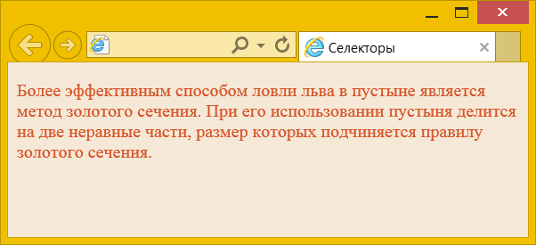
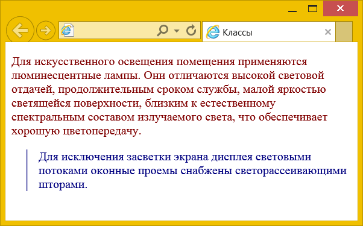
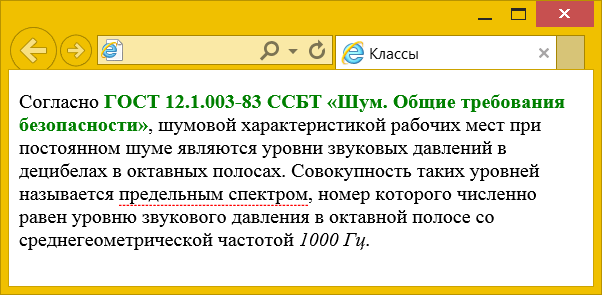
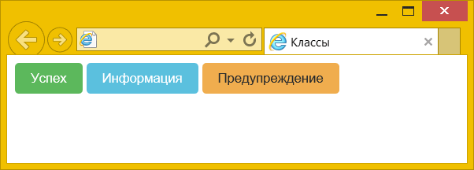
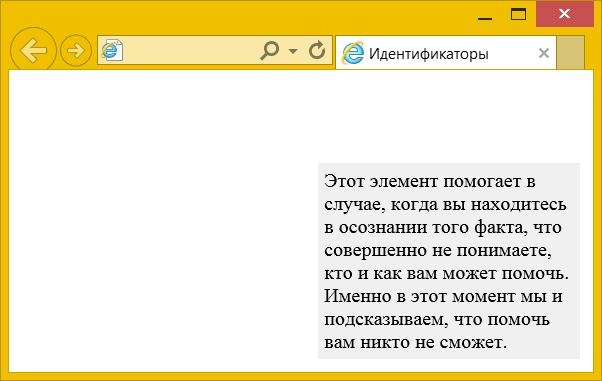
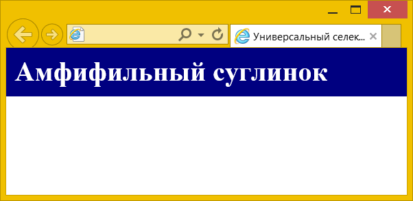

К базовым относятся селекторы элементов, классы, идентификаторы, универсальный селектор, а также селекторы атрибутов.
Селекторы элементов
В качестве селектора выступает имя любого элемента HTML, но без написания угловых скобок. К примеру, селектор p задаёт стиль всех элементов <p>, которые встречаются в коде HTML. В примере 1 показано изменение цвета фона и текста веб-страницы с помощью селектора body.
Пример 1. Использование селектора body
<!DOCTYPE html>
<html>
<head>
<meta charset="utf-8">
<title>Селекторы</title>
<style>
body {
background: #f6e8d7; /* Цвет фона */
color: #d6562b; /* Цвет текста */
}
</style>
</head>
<body>
<p>Более эффективным способом ловли льва в пустыне
является метод золотого сечения. При его использовании пустыня делится
на две неравные части, размер которых подчиняется правилу золотого
сечения.</p>
</body>
</html>Результат данного примера показан на рис. 1.

Рис. 1. Изменение цвета фона и текста веб-страницы
Следует понимать, что хотя стиль можно применить к любому элементу, результат будет заметен только для тех элементов, которые непосредственно отображаются в <body>.
Классы
Селекторы элементов определяют стиль сразу всех выбранных элементов, тогда как для сайтов часто требуется задать стиль отдельных элементов. Для таких задач и применяются классы. Чтобы CSS понимал что перед ним класс в стилях вначале ставится точка, затем сразу же без пробелов идёт произвольное имя класса.
.block { color: red; }Здесь имя класса задано как .block, а в HTML-коде к желаемым элементам добавляется атрибут class и в качестве значения пишем имя класса, но уже без точки впереди.
<div class="block"></div>К имени класса предъявляются особые требования:
- класс не должен начинаться с цифры — .1block писать нельзя, но допустимо .block1;
- класс не должен содержать русские буквы, только латинские — .кнопка использовать нельзя, .knopka можно;
- в имени класса допустимо использовать дефис (-) и подчёркивание (_) — .view-design-block и .search_form_button для примера;
- класс можно начинать с дефиса и подчёркивания — .__error__ для примера;
- классы чувствительны к регистру — .Red, .RED и .red — это всё разные имена.
В примере 2 показано добавление класса cite к элементу <p>.
Пример 2. Использование класса
<!DOCTYPE html>
<html>
<head>
<meta charset="utf-8">
<title>Классы</title>
<style>
p { /* Обычный абзац */
color: maroon; /* Цвет текста */
}
.cite {
color: navy; /* Цвет текста */
margin-left: 20px; /* Отступ слева */
border-left: 1px solid navy; /* Линия слева от текста */
padding-left: 15px; /* Расстояние от линии до текста */
}
</style>
</head>
<body>
<p>Для искусственного освещения помещения применяются люминесцентные лампы.
Они отличаются высокой световой отдачей, продолжительным сроком службы,
малой яркостью светящейся поверхности, близким к естественному спектральным
составом излучаемого света, что обеспечивает хорошую цветопередачу.</p>
<p class="cite">Для исключения засветки экрана дисплея световыми потоками
оконные проемы снабжены светорассеивающими шторами.</p>
</body>
</html>Результат данного примера показан на рис. 2.

Рис. 2. Вид абзаца, оформленного с помощью класса
Для первого абзаца используется тёмно-красный цвет текста, а следующий абзац, к которому применяется класс с именем cite, отображается тёмно-синим цветом и с линией слева.
Классы допустимо комбинировать с элементами, в этом случае селектор запишется следующим образом.
p.cite { color: navy; }Сперва пишется имя элемента, затем через точку без пробелов имя класса. Селектор p.cite будет задавать стиль только для элементов <p> с классом cite. В свою очередь стиль не будет применяться просто к элементам <p> без какого-либо класса, к элементам <p> с любым другим классом, ко всем остальным элементам, даже с классом cite. В примере 3 показано применение разных классов.
Пример 3. Использование классов
<!DOCTYPE html>
<html>
<head>
<meta charset="utf-8">
<title>Классы</title>
<style>
.gost {
color: green; /* Цвет текста */
font-weight: bold; /* Жирное начертание */
}
span.term {
border-bottom: 1px dashed red; /* Подчёркивание под текстом */
}
</style>
</head>
<body>
<p>Согласно <span class="gost">ГОСТ 12.1.003-83 ССБТ «Шум. Общие
требования безопасности»</span>, шумовой характеристикой рабочих
мест при постоянном шуме являются уровни звуковых давлений в децибелах
в октавных полосах. Совокупность таких уровней называется
<span class="term">предельным спектром</span>, номер которого численно равен
уровню звукового давления в <span>октавной полосе</span> со среднегеометрической
частотой <em class="term">1000 Гц</em>.</p>
</body>
</html>Результат данного примера показан на рис. 3. Обратите внимание, что селектор span.term меняет стиль элемента <span> с классом term и не затрагивает элементы <span> и <em>.

Рис. 3. Вид элементов, оформленных с помощью классов
Комбинация элемента и класса как правило применяется для повышения приоритета стиля. Селектор p.cite имеет больший приоритет, чем .cite, а он в свою очередь больше, чем селектор элемента p. Таким образом, p.cite > .cite > p. Мы ещё вернёмся к этому вопросу в разделе про каскадирование.
К любому элементу одновременно можно добавить несколько классов, перечисляя их в атрибуте class через пробел. В этом случае к элементу применяется стиль, описанный в правилах для каждого класса. Поскольку при добавлении нескольких классов они могут содержать одинаковые стилевые свойства, но с разными значениями, то берётся значение у класса, который описан в CSS-коде ниже. В самом атрибуте class порядок перечисления классов роли не играет.
В примере 4 показано использование разных классов для создания разноцветных кнопок.
Пример 4. Цветные кнопки
<!DOCTYPE html>
<html>
<head>
<meta charset="utf-8">
<title>Классы</title>
<style>
.btn {
padding: .5rem 1rem; /* Поля */
color: #fff; /* Цвет текста */
border-radius: .25rem; /* Радиус скругления */
border: none; /* Убираем рамку */
}
.btn-success {
background-color: #5cb85c; /* Цвет фона */
}
.btn-info {
background-color: #5bc0de; /* Цвет фона */
}
.btn-warning {
color: #292b2c; /* Цвет текста */
background-color: #f0ad4e; /* Цвет фона */
}
</style>
</head>
<body>
<button type="button" class="btn btn-success">Успех</button>
<button type="button" class="btn btn-info">Информация</button>
<button type="button" class="btn btn-warning">Предупреждение</button>
</body>
</html>Результат данного примера показан на рис. 4. К элементу <button> добавляется класс btn, который определяет общий стиль кнопок, а цвет фона и текста отдельных кнопок меняется через классы btn-success, btn-info и btn-warning.

Рис. 4. Цветные кнопки
Идентификаторы
Идентификатор определяет уникальное имя элемента, которое используется для изменения его стиля и обращения к нему через скрипты. Идентификаторы также применяются для создания якорей, чтобы можно было быстро перейти к нужному разделу веб-страницы.
В CSS при описании идентификатора вначале указывается символ решётки (#), затем идёт произвольное имя идентификатора.
#sidebar { color: red; }Здесь имя идентификатора задано как #sidebar, в HTML-коде к желаемым элементам добавляется атрибут id и в качестве значения пишется имя идентификатора, но уже без решётки.
<div id="sidebar"></div>В отличие от классов каждый идентификатор должен быть уникален, иными словами, встречаться в коде документа только один раз.
Для имён идентификаторов работают те же правила, что и для классов — имя не должно начинаться с цифры, содержать русские буквы и др.
В примере 5 показано изменение стиля идентификатора #help.
Пример 5. Использование идентификатора
<!DOCTYPE html>
<html>
<head>
<meta charset="utf-8">
<title>Идентификаторы</title>
<style>
#help {
position: absolute; /* Абсолютное позиционирование */
right: 10px; /* Положение элемента от правого края */
bottom: 10px; /* Положение от нижнего края */
}
.help {
width: 200px; /* Ширина блока */
padding: 5px; /* Поля вокруг текста */
background: #f0f0f0; /* Цвет фона */
}
</style>
</head>
<body>
<div id="help" class="help">
Этот элемент помогает в случае, когда вы находитесь в осознании того
факта, что совершенно не понимаете, кто и как вам может помочь. Именно
в этот момент мы и подсказываем, что помочь вам никто не сможет.
</div>
</body>
</html>Результат данного примера показан на рис. 5. Заметьте, что мы спокойно можем сочетать class и id в одном элементе, при этом стиль для идентификатора всегда имеет более высокий приоритет чем для класса.

Рис. 5. Результат применения идентификатора
Универсальный селектор
Иногда требуется установить одновременно один стиль для всех элементов веб-страницы, например, задать шрифт или начертание текста. В этом случае поможет универсальный селектор, который соответствует любому элементу веб-страницы.
Для обозначения универсального селектора применяется символ звёздочки (*).
* { font-weight: normal; }В данном случае для всех элементов задаётся нормальное начертание текста. Таким образом, элементы с жирным начертанием по умолчанию (вроде <h1>) теряют свою «жирность».
Универсальный селектор, как правило, применяется для сброса CSS. Цель сброса — приведение стилей разных браузеров к одному виду. Для каждого элемента браузер задаёт стиль по умолчанию, при этом возможны небольшие различия в отображении элемента в разных браузерах. Чтобы убрать эти различия и применяется сброс. На деле вопрос, использовать сброс CSS или нет, спорный, каждый решает его по своему.
В примере 6 показано обнуление свойства margin для всех элементов веб-страницы.
Пример 6. Использование универсального селектора
<!DOCTYPE html>
<html>
<head>
<meta charset="utf-8">
<title>Универсальный селектор</title>
<style>
* {
margin: 0; /* Обнуляем значение */
}
header {
background: navy; /* Цвет фона */
color: white; /* Цвет текста */
padding: 10px; /* Поля */
}
</style>
</head>
<body>
<header><h1>Амфифильный суглинок</h1></header>
</body>
</html>Результат данного примера показан на рис. 6.

Рис. 6. Обнуление margin